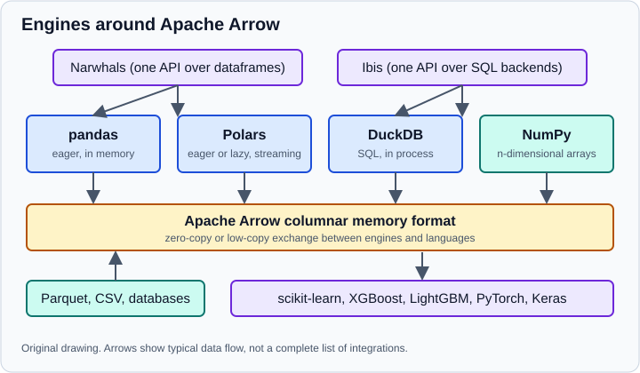

Beyond the Core: Polars, Arrow, DuckDB & Deep Learning
|
This content was generated with the assistance of AI and should be verified against the official documentation before being relied on in production. |
The core of this section is the scientific Python stack described in The Scientific Python Stack: NumPy for arrays, pandas for tables, Matplotlib and seaborn for charts, scikit-learn and statsmodels for models. That stack is enough for most analyses, and it is the right place to learn. This page is a map of what lies beyond it. It does not teach the libraries in depth. It says what each one owns, shows a short runnable example, explains how data moves between them, and says when a project has a real reason to adopt one.
Examples target Python 3.13 or 3.14 and were run on Python 3.13. They use NumPy 2.5, pandas 3.1 and scikit-learn 1.9. They also use the versions of the extra libraries that were current in October 2026: Polars 2.1, DuckDB 2.0, PyArrow 26, Narwhals 2.28, Ibis 12.0, XGBoost 3.4, LightGBM 4.7, PyTorch 2.15 and Keras 3.15. Every Python snippet on this page was run with those versions on 2026-10-31. These libraries release often, so check the release notes of the version you install; the Choosing Tools & Learning Path page turns this positioning into decision tables.
The landscape in one picture
Three ideas organise the ecosystem. First, there are several engines that hold and transform tabular data: pandas, Polars and DuckDB. Second, Apache Arrow is a shared in-memory format that lets those engines hand data to each other cheaply. Third, there are compatibility layers (Narwhals, Ibis) that let one piece of code run on more than one engine, and modelling libraries (scikit-learn, gradient-boosting libraries, deep learning frameworks) that consume the result.

The figure is an original drawing. The rest of the page follows it from the engines downwards.
Polars
Polars is a dataframe library written in Rust with a Python API. It differs from pandas in design rather than in the vocabulary of operations:
-
Expressions. A column computation is an object (
pl.col("sales") * 1.21) that is built first and executed later, so the engine sees the whole computation and can run independent expressions in parallel. -
Lazy evaluation. A
LazyFramerecords a query plan.collect()optimises that query (projection and predicate pushdown, among other rewrites) and runs it. An eagerDataFrameis still available for interactive work. -
No index. Rows are identified by position, never by a label, so there is no
.loc/.ilocdistinction and no alignment on an index. Joins are always explicit. -
Strict types and a real null. Missing data is
nullin every dtype, integers stay integers when values are missing, and operations that would silently change a dtype raise instead. -
Streaming and out-of-core execution. The streaming engine processes data in batches so that a query can handle files larger than memory. Polars 2.0 (released on 2026-10-06) enabled out-of-core processing by default and added a streaming sort, according to its release notes.
The first example builds an eager aggregation and then the same kind of query lazily, printing the optimised query.
import polars as pl
df = pl.DataFrame(
{
"city": ["Madrid", "Madrid", "Oslo", "Oslo", "Lima"],
"year": [2024, 2025, 2024, 2025, 2025],
"sales": [120.0, 150.0, 80.0, None, 60.0],
}
)
result = (
df.filter(pl.col("sales").is_not_null())
.group_by("city")
.agg(
pl.col("sales").sum().alias("total"),
pl.col("sales").mean().alias("mean"),
pl.len().alias("rows"),
)
.sort("total", descending=True)
)
print(result)
lazy = (
pl.LazyFrame(df)
.filter(pl.col("year") == 2025)
.with_columns((pl.col("sales") * 1.21).alias("sales_gross"))
.select("city", "sales_gross")
)
print(lazy.explain())
print(lazy.collect())Running it prints:
shape: (3, 4)
┌────────┬───────┬───────┬──────┐
│ city ┆ total ┆ mean ┆ rows │
│ --- ┆ --- ┆ --- ┆ --- │
│ str ┆ f64 ┆ f64 ┆ u32 │
╞════════╪═══════╪═══════╪══════╡
│ Madrid ┆ 270.0 ┆ 135.0 ┆ 2 │
│ Oslo ┆ 80.0 ┆ 80.0 ┆ 1 │
│ Lima ┆ 60.0 ┆ 60.0 ┆ 1 │
└────────┴───────┴───────┴──────┘
simple π 2/2 ["city", "sales_gross"]
WITH_COLUMNS:
[(col("sales") * 1.21).alias("sales_gross")]
simple π 2/2 ["city", "sales"]
FILTER col("year") == 2025
FROM
simple π 3/3 ["city", "sales", "year"]
DF ["city", "year", "sales"]; PROJECT */3 COLUMNS
shape: (3, 2)
┌────────┬─────────────┐
│ city ┆ sales_gross │
│ --- ┆ --- │
│ str ┆ f64 │
╞════════╪═════════════╡
│ Madrid ┆ 181.5 │
│ Oslo ┆ null │
│ Lima ┆ 72.6 │
└────────┴─────────────┘
In the printed query tree, read from the bottom: the data frame is projected to the three columns it has, the filter runs, a second
projection keeps only the two columns the rest of the query needs, and the new column is computed last. With a file
source, the same projection and filter would be pushed into the reader so that unused columns and rows are never
loaded. The null in the last table is the missing sales value propagating through the multiplication, where pandas
would print NaN in a float column.
Lazy scans and the streaming engine
The practical pattern for large files is scan_* (lazy) instead of read_* (eager), followed by
collect(engine="streaming"). The next snippet is part of the interchange example in the Arrow section below; it
writes a small Parquet file first so it can be run on its own.
import polars as pl
pl.DataFrame({"id": [1, 2, 3], "score": [0.5, 0.25, 0.75]}).write_parquet("scores.parquet")
lazy = pl.scan_parquet("scores.parquet").filter(pl.col("score") > 0.4).select("id", "score")
print(lazy.collect(engine="streaming"))shape: (2, 2)
┌─────┬───────┐
│ id ┆ score │
│ --- ┆ --- │
│ i64 ┆ f64 │
╞═════╪═══════╡
│ 1 ┆ 0.5 │
│ 3 ┆ 0.75 │
└─────┴───────┘Source: Polars user guide, streaming.
Where Polars differs from pandas, and the costs
-
The ecosystem is built around pandas. scikit-learn, statsmodels, seaborn and most tutorials accept pandas data frames first. Polars data frames are accepted by more of them each release (scikit-learn can return them through
set_output(transform="polars")), but converting withto_pandas()orto_numpy()at the boundary is still common. -
Different idioms. Code that relies on the index, on
inplaceoperations or on row-wiseapplydoes not translate one to one. Polars favours expressions over Python callbacks, because a Python function per row runs outside the optimiser and is slow. -
Faster is a measurement, not a promise. The speed-up over pandas depends on the operation, the data size and the number of cores. For a table that fits comfortably in memory and a single group-by, the difference may not matter. Measure on your own data before migrating a working pipeline.
-
Major version. Polars 2.0 changed some defaults (see its release notes), so articles written for Polars 0.x or 1.x may need small changes. Pin the version in the environment, as explained in Reproducibility & MLOps Basics.
Apache Arrow and PyArrow
Apache Arrow is a specification for how columnar data is laid out in memory, plus libraries that implement it. A column is stored as contiguous buffers (values, a validity bitmap for nulls, offsets for variable-width data), the same layout in every language and every engine that supports the format. Because the layout is shared, a table can move from one engine to another without being serialised and parsed again: sometimes the buffers are shared (zero-copy) and sometimes a cheap conversion is needed.
PyArrow is the Python library for Arrow. In practice it matters to a data scientist for three reasons:
-
Interchange. It is the common currency between pandas, Polars, DuckDB and many other libraries. Libraries that implement the Arrow PyCapsule interface can exchange data without PyArrow being involved in user code.
-
Parquet and Feather.
pyarrow.parquetreads and writes Parquet, the columnar file format recommended in Data Sources & File Formats. pandas, Polars and DuckDB all read Parquet through (or compatibly with) the same specification. -
Typed, nullable columns. Arrow types, including proper nulls for every type, are the model behind pandas'
ArrowDtypeand the defaultstrdtype in pandas 3 when PyArrow is installed. PyArrow remains an optional dependency of pandas 3.1; the older statement that it would become required with pandas 3.0 is outdated, because that plan was postponed.
import pandas as pd
import polars as pl
import pyarrow as pa
import pyarrow.parquet as pq
pdf = pd.DataFrame({"id": [1, 2, 3], "name": ["a", "b", "c"], "score": [0.5, 0.25, 0.75]})
table = pa.Table.from_pandas(pdf) # pandas -> Arrow
print(table.schema)
pl_df = pl.from_arrow(table) # Arrow -> Polars
print(pl_df.schema)
back = pl_df.to_pandas() # Polars -> pandas
print(back.dtypes)
pq.write_table(table, "scores.parquet")
print(pq.read_metadata("scores.parquet").num_rows, "rows")id: int64
name: large_string
score: double
-- schema metadata --
pandas: '{"index_columns": [{"kind": "range", "name": null, "start": 0, "' + 590
Schema({'id': Int64, 'name': String, 'score': Float64})
id int64
name str
score float64
dtype: object
3 rowsTwo details are visible in the output. The pandas 3 str column became Arrow large_string, and the pandas index and
dtype information travelled in the schema metadata, which is how a round trip through Parquet restores the original
pandas frame.
A pitfall: Arrow tables are immutable. "Modifying" a column returns a new table, and conversion to pandas or NumPy may copy, in particular for strings and for columns with nulls. Do not assume that every hand-off is free.
DuckDB
DuckDB is an analytical SQL database that runs inside your process, like SQLite, but
with a columnar, vectorised engine designed for scans, joins and aggregations. There is no server: import duckdb is
all the installation there is. It reads CSV, JSON and Parquet files directly, can attach other databases, spills to disk
when a query is larger than memory, and integrates with Python objects.
The integration that matters in a notebook is that a query can refer to a pandas data frame, a Polars data frame or an Arrow table by variable name, and that results come back as whichever of these you ask for.
import duckdb
import pandas as pd
orders = pd.DataFrame(
{"customer": ["ana", "ben", "ana", "cleo", "ben"], "amount": [10.0, 20.0, 5.0, 40.0, 15.0]}
)
con = duckdb.connect() # in-memory database
con.execute("CREATE TABLE scores AS SELECT * FROM 'scores.parquet'")
print(con.sql("SELECT count(*) AS n, avg(score) AS mean_score FROM scores").fetchall())
# Query a pandas DataFrame in the local scope directly (replacement scan).
rel = con.sql("SELECT customer, sum(amount) AS total FROM orders GROUP BY customer ORDER BY total DESC")
print(rel.df())
print(type(rel.pl()))
print(type(rel.to_arrow_table()))[(3, 0.5)]
customer total
0 cleo 40.0
1 ben 35.0
2 ana 15.0
<class 'polars.dataframe.frame.DataFrame'>
<class 'pyarrow.lib.Table'>The example reads scores.parquet from the previous section. In DuckDB 2.0 the relation method arrow() returns a
RecordBatchReader (a stream of batches), not a table; use to_arrow_table() when you need a table, a detail that
older snippets get wrong.
Source: DuckDB Python client overview and SQL on pandas.
DuckDB is the best fit when the work is naturally SQL (joins, window functions, reports over Parquet files), when the data is larger than comfortable for pandas but does not justify a cluster, or when a team already thinks in SQL. The SQL itself is covered in the site’s aggregate and window functions page; for choosing between an embedded engine and a server database see Choosing the Right Database. A pitfall to know: a replacement scan resolves a name from the Python scope at execution time, so a typo or a renamed variable shows up as a missing table, and shadowing a variable changes the query’s meaning.
Narwhals and Ibis: one API, several backends
Both projects solve the problem of code that must not be tied to one engine, but at different levels.
Narwhals is a thin, dependency-light layer over dataframe libraries. You
wrap a native object with nw.from_native, write the logic against a subset of the Polars-style API, and call
to_native() to get the original type back. It is aimed at library authors who want to accept pandas, Polars and others
without depending on any of them.
import narwhals as nw
import pandas as pd
import polars as pl
def add_ratio(df_native):
df = nw.from_native(df_native)
return df.with_columns(ratio=nw.col("a") / nw.col("b")).to_native()
data = {"a": [1.0, 2.0, 3.0], "b": [2.0, 4.0, 4.0]}
print(add_ratio(pd.DataFrame(data)))
print(add_ratio(pl.DataFrame(data))) a b ratio
0 1.0 2.0 0.50
1 2.0 4.0 0.50
2 3.0 4.0 0.75
shape: (3, 3)
┌─────┬─────┬───────┐
│ a ┆ b ┆ ratio │
│ --- ┆ --- ┆ --- │
│ f64 ┆ f64 ┆ f64 │
╞═════╪═════╪═══════╡
│ 1.0 ┆ 2.0 ┆ 0.5 │
│ 2.0 ┆ 4.0 ┆ 0.5 │
│ 3.0 ┆ 4.0 ┆ 0.75 │
└─────┴─────┴───────┘The function received a pandas frame and returned a pandas frame, then received a Polars frame and returned a Polars frame, with the same code.
Ibis is a dataframe API that compiles to SQL and runs on many backends (DuckDB, Polars, PostgreSQL, BigQuery, Snowflake and others). The same expression runs on a laptop with DuckDB and on a warehouse in production. Expressions are lazy: nothing runs until you ask for a result.
import ibis
from ibis import _
con = ibis.duckdb.connect() # in-memory DuckDB
t = con.create_table("t", ibis.memtable({"g": ["x", "y", "x"], "v": [1, 2, 3]}))
expr = t.group_by("g").aggregate(total=_.v.sum()).order_by("g")
print(ibis.to_sql(expr))
print(expr.to_pandas())SELECT
*
FROM (
SELECT
"t0"."g",
SUM("t0"."v") AS "total"
FROM "memory"."main"."t" AS "t0"
GROUP BY
1
) AS "t1"
ORDER BY
"t1"."g" ASC
g total
0 x 4
1 y 2Use Narwhals when you write a library or a reusable function that must accept several dataframe types. Use Ibis when your data lives in a database or warehouse and you want to write Python instead of SQL strings without moving the data. Neither is needed for an ordinary analysis on one engine.
Source: Ibis, getting started.
Gradient boosting beyond scikit-learn: XGBoost and LightGBM
For tabular data, tree ensembles trained by gradient boosting are the strongest general-purpose baseline, and
scikit-learn already includes one: HistGradientBoostingClassifier and HistGradientBoostingRegressor are stable
(no experimental import is needed any more), handle missing values natively and support categorical features. Two
external libraries are used just as often:
Both provide scikit-learn-compatible estimators (XGBClassifier, LGBMClassifier) that work inside a Pipeline, in
cross-validation and in grid search, so adopting one rarely changes the surrounding code.
from lightgbm import LGBMClassifier
from sklearn.datasets import make_classification
from sklearn.ensemble import HistGradientBoostingClassifier
from sklearn.metrics import roc_auc_score
from sklearn.model_selection import train_test_split
from xgboost import XGBClassifier
X, y = make_classification(n_samples=2000, n_features=20, n_informative=8, random_state=0)
X_train, X_test, y_train, y_test = train_test_split(X, y, test_size=0.25, random_state=0, stratify=y)
models = {
"HistGradientBoosting": HistGradientBoostingClassifier(random_state=0),
"XGBoost": XGBClassifier(n_estimators=200, learning_rate=0.1, max_depth=4, random_state=0),
"LightGBM": LGBMClassifier(n_estimators=200, learning_rate=0.1, num_leaves=15, random_state=0, verbose=-1),
}
for name, model in models.items():
model.fit(X_train, y_train)
auc = roc_auc_score(y_test, model.predict_proba(X_test)[:, 1])
print(f"{name:22s} AUC = {auc:.3f}")HistGradientBoosting AUC = 0.977
XGBoost AUC = 0.975
LightGBM AUC = 0.976The three scores are within noise of each other on this synthetic problem, which is the usual outcome: the choice
between them rarely matters as much as feature quality, a sound validation scheme and tuning. Do not read the numbers as
a ranking of the libraries. Install notes: on macOS, the LightGBM wheel needs the OpenMP runtime (libomp, for example
from Homebrew) and fails at import with a missing libomp.dylib otherwise.
Deep learning: PyTorch and Keras
Deep learning is the next step when the data is images, audio, text or other unstructured signals, or when a model has to be trained end to end by gradient descent through many layers. On small tabular data it is usually the wrong tool: gradient boosting is easier to train, needs less data and is easier to explain.
-
PyTorch provides tensors (similar to NumPy arrays, with GPU support), automatic differentiation and the
torch.nnbuilding blocks. Training code is an explicit loop that you write and can debug with ordinary Python tools. -
Keras is a high-level API. Keras 3 runs on several backends (JAX, TensorFlow and PyTorch, selected with the
KERAS_BACKENDenvironment variable), and offerscompileandfitfor the common cases.
A minimal PyTorch training loop fits a linear model by gradient descent on synthetic data:
import torch
from torch import nn
torch.manual_seed(0)
X = torch.randn(256, 3)
true_w = torch.tensor([2.0, -1.0, 0.5])
y = X @ true_w + 0.1 * torch.randn(256)
model = nn.Linear(3, 1)
loss_fn = nn.MSELoss()
optimizer = torch.optim.SGD(model.parameters(), lr=0.1)
for epoch in range(200):
optimizer.zero_grad()
loss = loss_fn(model(X).squeeze(1), y)
loss.backward()
optimizer.step()
print(f"final loss {loss.item():.4f}")
print(model.weight.detach().numpy().round(2))final loss 0.0104
[[ 1.99 -1.01 0.5 ]]The recovered weights are close to the true ones, and the loop shows the four steps every PyTorch trainer repeats: clear the gradients, compute the loss, back-propagate, update the parameters. The same model in Keras, using the PyTorch backend:
import os
os.environ["KERAS_BACKEND"] = "torch" # must be set before importing keras
import keras
import numpy as np
keras.utils.set_random_seed(0)
rng = np.random.default_rng(0)
X = rng.normal(size=(256, 3)).astype("float32")
y = X @ np.array([2.0, -1.0, 0.5], dtype="float32")
model = keras.Sequential([keras.layers.Input((3,)), keras.layers.Dense(1)])
model.compile(optimizer=keras.optimizers.SGD(0.1), loss="mse")
history = model.fit(X, y, epochs=20, batch_size=32, verbose=0)
print(keras.backend.backend(), f"final loss {history.history['loss'][-1]:.5f}")torch final loss 0.00000Pitfalls specific to this step: the NumPy-to-tensor boundary silently shares memory (torch.from_numpy does not copy),
so in-place changes on one side show on the other; float64 NumPy data becomes float64 tensors, while models default to
float32, so cast explicitly; and a model trained in one framework version should be exported through a documented
format rather than pickled. Deep learning also needs the discipline described in
Model Evaluation & Validation: splits made before preprocessing, a fixed seed
and a baseline to beat. Old tutorials that rely on Theano (discontinued), TensorFlow 1 Session and placeholder
objects, or the standalone keras.wrappers.scikit_learn module no longer run on current versions.
For large language models and pretrained transformers, this site has dedicated sections: What Is an LLM? and the Hugging Face guide. To serve a trained model behind an API, see Serving data science and AI models with FastAPI.
How the pieces fit together
A typical modern project mixes these tools instead of picking one:
Nothing in the diagram is mandatory. A pandas-only pipeline that fits in memory is a complete and respectable solution. Add an engine when a measured problem asks for it: memory pressure, a slow group-by, SQL that is clearer than method chains, or a dataset that already lives in a warehouse.
Pitfalls and outdated advice
-
Premature migration. Rewriting a working pandas pipeline in Polars for speed, without profiling, costs time and loses ecosystem integration.
-
Copies hidden at the boundaries. Each conversion between libraries may copy data; do the heavy work inside one engine and convert once at the end.
-
Version drift. Polars moved to 2.0 and DuckDB to 2.0 in October 2026; examples from before that may use removed or changed behaviour. Quote the version you tested.
-
Benchmarks without context. Public benchmarks measure specific queries, hardware and versions. Treat them as hints and reproduce on your data.
-
Old books. Texts from 2015 to 2019 present Hadoop and MapReduce as the way to handle large data, use Python 2, and predate Arrow, Parquet-first workflows, Polars and DuckDB, as well as TensorFlow 2 and PyTorch as the standard deep learning tools. Their concepts (scalability, distributed computing, the basics of backpropagation) remain useful; the code does not run unchanged.
See also
In the ML (Machine Learning) section: Choosing a Framework, PyTorch and TensorFlow.